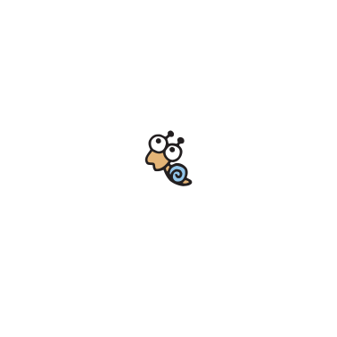
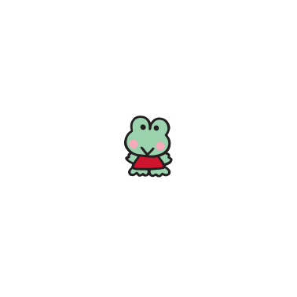
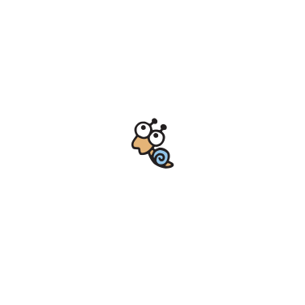
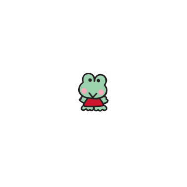

- 케로케로케로피
- 일본명 : けろけろけろっぴ
- 영문명 : Kerokerokeroppi
- • 성별 : 남자
- • 모티브 : 개구리
- • 애칭 : 케로피(けろっぴ)
- • 생일 : 7월 10일
- • 가족 관계 : 아빠, 엄마, 남동생, 누나, 할아버지, 할머니
- 데뷔년
- 성격
- 특기
- 취미
- 캐릭터 소개
케로케로케로피는 모험을 좋아하며 활기찬 성격의 도넛 연못의 인기 스타예요!
노래를 잘 부르고, 개구리 수영은 잘 못하지만, 크롤 수영은 특기랍니다.
도너츠 연못의 케로케로하우스가 케로피의 집이랍니다.
 



노래 제목 : 케로케로케로피(けろけろけろっぴ) 작사/작곡 : 나가사와 히로(長沢ヒロ) 편곡 : 카네사키 준이치(兼崎順一) 가수 : 세키야 마사코(関谷雅子) 1992년 8월 21일 산리오에서 발매한 CD앨범 '*다 같이 노래하자! 캐릭터 송'에 수록되어 있는 곡. *みんなでうたおう！キャラクターソング (SACV-2030) 해당 곡은 케로피 애니메이션 OVA의 오프닝 테마곡으로도 사용되고 있다.
활기찬 성격에 모험을 좋아하는 *도넛 연못 연꽃 마을의 인기인. *일본어로는 '하스노 우에 타운(はすの上タウン)' '연꽃 위의 마을'이란 뜻이다. 도넛 연못의 케로케로하우스가 케로피의 집. 노래를 잘 부르며, 개구리 수영(평영)은 잘 못하지만, 크롤 수영(자유형)은 특기일 정도로 잘 한다. 땅 위에서 뿐만 아니라 물 속에서도 호흡할 수 있다. 케로피가 가장 좋아하는 음식은 엄마가 만든 주먹밥.
하피단부이 일본명 : はぴだんぶい 영문명 : Hapidanbui 2020년 1월 31일, 포차코, 배드바츠마루, 오리 페클, 한교동, 턱시도샘과 같이 '하피단부이(はぴだんぶい)' 라는 밴드를 결성했다.
• 결성일 : 2020년 1월 31일 • 멤버 : 포차코, 턱시도샘, 케로케로케로피, 배드바츠마루, 한교동, 오리 페클 개성 넘치는 6명의 남자 아이들이 '행복해지고 싶은 남자들, V자 회복을 노리자'는 의미를 담아 유닛으로 '하피단부이'를 결성. "괜찮아! 넌 너대로 잘될 거야"라는 메시지와 다양한 도전을 통해 모두를 좀 더 행복하게 만들어 줄 거야.
산리오 남자 일본명 : サンリオ男子 영문명 : Sanrio Boys / Sanrio Danshi 국내명 : 퓨로 보이즈 산리오에서 제작하는 여성향 미디어믹스 프로젝트 *'산리오 남자(サンリオ男子)' *국내에서는 '*퓨로 보이즈'라는 제목으로 KBS kids에서 더빙, 방영되었었다. *퓨로 보이즈는 스페인어로 '순수한 소년들'을 뜻한다. 선생님인 '스가미 나오키(菅見直樹)'라는 캐릭터가 케로피를 좋아하는 것으로 나온다.
케로케로케로피 X 마츠노 쵸로마츠 일본 애니메이션 '오소마츠상(おそ松さん)'과 산리오의 콜라보. 케로피는 '마츠노 쵸로마츠(松野 チョロ松)' 캐릭터와 콜라보 했으며 다양한 굿즈가 제작, 발매되었다.
케로케로케로피 X 아스이 츠유 동명의 만화를 원작으로 한 일본 애니메이션 '나의 히어로 아카데미아(僕のヒーローアカデミア)'와 산리오의 콜라보. 케로피는 '아스이 츠유(蛙吹梅雨)' 캐릭터와 콜라보 했으며, 다양한 굿즈가 제작, 발매되었다.
케로케로케로피 X 마조리카 일본 애니메이션 '꼬마 마법사 레미(おジャ魔女どれみ)'와 산리오의 콜라보. 케로피는 '마조리카(マジョリカ)' 캐릭터와 콜라보 했으며, 다양한 굿즈가 제작, 발매되었다.

케로케로케로피 X 몬치치 일본의 인형 회사 '주식회사 세키구치(株式会社セキグチ)'의 '몬치치(モンチッチ)'와 산리오의 콜라보. 산리오의 캐릭터와 콜라보한 다양한 굿즈가 제작, 발매되었다.
케로케로케로피 X 스플래툰2 일본의 닌텐도(Nintendo) 스위치(Switch) 게임 '스플래툰2(スプラトゥーン2)'과 산리오의 콜라보. 산리오의 캐릭터와 콜라보한 다양한 굿즈가 제작, 발매되었다.
케로케로케로피 X 토비 일본의 닌텐도(Nintendo) 게임 '동물의 숲(どうぶつの森)'과 산리오의 콜라보. 산리오 캐릭터와 콜라보한 캐릭터를 만들어 *아미보(amiibo) 카드를 발매. 케로피와의 콜라보로 '토비(トビー)'라는 동물의 숲 주민 캐릭터가 탄생했다. *동물의 숲에서 해당 아미보 카드를 사용하면 해당 산리오 콜라보 캐릭터를 캠핑장으로 불러서 만날 수 있다.
케로케로케로피 X 대쉴린(Dashleen) 미국 최대의 완구회사인 '마텔(Mattel)'과 산리오의 콜라보. 산리오의 캐릭터와 콜라보한 인형이 제작, 발매되었으며, 케로피와 콜라보한 인형, 대쉴린(Dashleen)이 제작, 발매되었다.